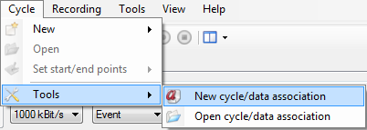

A ‘Cycle data association’ file is a file containing association between CAN parameters and data source channels.
For example, let’s say that you have a CAN configuration containing a CAN parameter called ‘Speed’ and that you want create a cycle using this configuration. You have a source data file to create your cycle but in this data file, the ‘Speed’ channel is called ‘Velocity’.
A ‘Cycle data association’ file will fix that issue since it allow to associate CAN parameters with a data channel. So in our case we will simply states that the CAN parameter ‘Speed’ is using values of the data channel ‘Velocity’ as source of data.
To open the ‘Cycle data association’ edition form, click the ‘Cycle\Tools\New Cycle\Data association’ menu.

The ‘Cycle data association’ edition form appears.

This form contains a tool bar on the top to access the ‘Cycle data association’ file management commands (new, open, save).
A control panel in which CAN configuration and data file are intended to be specified.
A grid, containing actual CAN parameter/data channel associations.
Click the ‘Open’  button on the right of the ‘CAN configuration’ field.
button on the right of the ‘CAN configuration’ field.
Then select the data file that you want to use as template to set associations by clicking the ‘Open’ button on the right of the ‘Data file template’ field.

As mentioned by its label, that file is a template. So it doesn’t mean that association works only with this particular data file. It means association will work with any data file having the same structure as the template.
This is important here to underline that by ‘structure’ we consider both data channel name and data channel location. If channel ‘Velocity’ is placed on the third column of the data file, association will work with all data file having a channel ‘Velocity’ on the third column. If ‘Velocity’ moves to the fifth column for some reasons, association won’t any longer work and association file will have to be modified accordingly.
Another important point is that CANStream consider data of the first column as time vector. If time isn’t on the first column it may results to unpredictable cycle.
Once the CAN configuration loaded the association grid is filled, each row of the grid being a CAN parameter of the CAN configuration.

The association grid has six columns:
Created with the Personal Edition of HelpNDoc: Produce electronic books easily